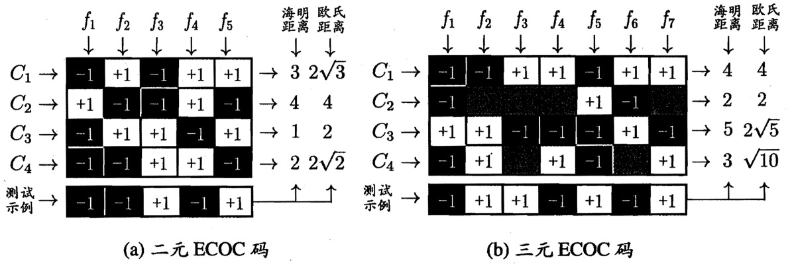

一. 概念
给定样本$\mathbf{x} = (x_1, x_2, …,x_d)$，线性模型（linear model）通过属性的线性组合来进行预测，即：
$$f(\mathbf{x}) = w_1x_1 + w_2x_2 + … + w_dx_x + b$$一般写作向量形式：$f(\mathbf{x}) = \mathbf{w}^T\mathbf{x} + b$，其中权重向量$\mathbf{w}$和偏置项$b$为模型需要学习的参数。
线性模型有良好的可解释性，权重表达了对应属性的重要性。在线性模型的基础上，引入高维映射可以得到非线性模型。
二. 线性回归（Linear regression）
“线性回归”试图学得线性模型（参数$\mathbf{w}$和$b$），使其预测值尽可能准确：$f\left(\boldsymbol{x}_{i}\right)=\boldsymbol{w}^{\mathrm{T}} \boldsymbol{x}_{i}+b\simeq y_{i}$。
最小二乘法（Least square method）与均方误差（Mean square error）
最小二乘法用于参数估计，其找到使所有样本与其欧氏距离之和最小的直线，是常见的线性回归方法。最小二乘法求解$\mathbf{w}$和$b$，使均方误差（mean square error, MSE）最小，即使$E_{(\mathbf{w}, b)}=\frac{1}{m}\sum_{i=1}^{m}\left(y_{i}-\boldsymbol{w}^{\mathrm{T}} \boldsymbol{x}_{i}-b\right)^{2}$最小。将$E_{(\mathbf{w}, b)}$（凸函数，二阶导数在区间上非负）对$\mathbf{w}$与$b$求导，可获得最优解的解析解。
三. 广义线性模型（Generalized linear model）
除了让线性模型预测值逼近真实值$y$，还可以让其逼近$y$的衍生物，即：
$$g(y) = \mathbf{w^Tx} + b \Rightarrow y = g^{-1}(\mathbf{w^Tx} + b)$$，其认为真实值$y$在$g(y)$尺度上线性变化，$g(\cdot)$ 称为联系函数（单调可微）。广义线性模型可实现非线性映射功能，例如，对数线性回归（log-linear regression，$g(y) = ln(y)$）、对数几率回归（logistic regression，$g^{-1}(z) = \frac{1}{1+e^{-z}}$，$g(y) = \ln{\frac{y}{1-y}}$）。
对数几率回归（Logistic regression）
逻辑回归用于分类任务，其标记是离散值，而线性模型的输出是实值，需要单调可微的联系函数将两者联系。使用对数几率函数（logistic function，近似单位阶跃函数，$g^{-1}(z) = \frac{1}{1+e^{-z}}$）作为联系函数，代入得：$$y = \frac{1}{1+ e^{-(\mathbf{w^Tx} + b)}}$$，是一种Sigmoid函数（即，形似S的函数），也可写作：
$$\ln{\frac{y}{1-y}} = \mathbf{w^Tx} + b$$其中，$\frac{y}{1-y}$ 称作几率（odds），$y$/$1-y$表示样本是正/反例的概率，几率表示该样本为正例的相对可能性，对几率取对数得到对数几率（log odds，也称logit）。所以，对数几率回归的实质，是让线性回归模型的预测值逼近（分类任务）真实标记的对数几率。对数几率回归，不仅可预测出类别，还能得到该预测的概率。
极大似然法（Maximum likelihood）与对数损失（Log loss）
极大似然法用于参数估计，其找到使已观测的样本出现概率最大的模型参数（于线性模型中，即$\mathbf{w}$和$b$）。极大似然法求解$\mathbf{w}$和$b$，令所有样本概率$p=\prod_{\mathbf{x}} p(y^{True} \mid \mathbf{x})$最大，即使得对数损失（Log-loss）最小。对概率积求对数，得到对数似然（log-likelihood）：
$$\ell(\mathbf{w},b) = \sum_{i=1}^m \ln p(y^{True}_i | \mathbf{x_i}) = \sum_{i=1}^m \ln (y_i^{True}p(y_i^{True}=1|\mathbf{x}) + (1-y_i^{True})p(y_i^{True}=0|\mathbf{x}))$$其中，$p(y^{True}=1|\mathbf{x}) = \frac{e^{\mathbf{w^Tx} + b}}{1+e^{\mathbf{w^Tx} + b}}$，$p(y^{True}=0|\mathbf{x}) = 1-p(y^{True}=1|\mathbf{x}) = \frac{1}{1+e^{\mathbf{w^Tx} + b}}$分别代表样本被预测为第1类、第0类的概率。对数损失（Log loss），定义如下：$$\text{Log-loss} = -\frac{1}{n} \sum_{i=1}^{n}\left(\left(y_{i}^{True} \log p_{i}\right)+\left(1-y_{i}^{True}\right) \log \left(1-p_{i}\right)\right)$$，其是交叉熵损失（Cross entropy loss = -$\frac{1}{N} \sum_{i}\sum_{c=1}^{M} y_{i c}^{True} \log \left(p_{i c}\right)$）在二分类时的特殊情况。所以说最大化似然函数等价于最小化对数损失函数。
对数几率回归为什么不使用均方误差？
- $\begin{aligned} g^{\prime}(z) =\frac{d}{d z} \frac{1}{1+e^{-z}} =\frac{1}{\left(1+e^{-z}\right)^{2}}\left(e^{-z}\right) =\frac{1}{\left(1+e^{-z}\right)} \cdot\left(1-\frac{1}{\left(1+e^{-z}\right)}\right) =g(z)(1-g(z)) \end{aligned}$，所以当$g(z)$接近0或1（优化目标）时，有梯度消失的问题。
- 均方误差与对数几率函数的组合函数（$M S E\left(y, \sigma\left(X^{T} w\right)\right)$）是非凸的（non-convex，二阶导数在区间上可负），而对数误差与对数几率函数的组合函数是凸函数，详见参考。
四. 线性判别分析（Linear Discriminant Analysis）
线性判别分析（Linear Discriminant Analysis，LDA）同样是一种线性学习方法，其将所有样例投影到一条直线上，使得同类样例投影尽可能近，不同类样例的投影尽可能远。
$\mu_i$、$\Sigma_i$分别表示第$i \in{0,1}$类示例的均值向量、协方差矩阵($\Sigma_{i j}=\operatorname{cov}\left(X_{i}, X_{j}\right)=\mathrm{E}\left[\left(X_{i}-\mu_{i}\right)\left(X_{j}-\mu_{j}\right)^{\mathrm{T}}\right]$)。若将样本点投影到直线$\mathbf{w}$上， 则样本投影的均值、方差分别为$\mathbf{w}^T\mu$、$\mathbf{w}^T\Sigma\mathbf{w}$。
同类样例的投影近，意味着同类样例投影的协方差应尽可能小（下式分母）；异类样例的投影远，意味着异类投影中心之间的距离尽可能大（下式分子），即最大化：
$$J = \frac{\Vert \mathbf{w}^T\mu_0 - \mathbf{w}^T\mu_1 \Vert^2_2}{\mathbf{w}^T\Sigma_0\mathbf{w}+\mathbf{w}^T\Sigma_1\mathbf{w}}\
= \frac{\mathbf{w}^T(\mu_0 - \mu_1)(\mu_0 - \mu_1)^T\mathbf{w}}{\mathbf{w}^T(\Sigma_0+\Sigma_1)\mathbf{w}}$$
五. 基于二分类的多分类器
有些二分类方法可以推广到多分类（如LDA），但现实中更多地是把多分类任务分解为多个二分类任务，利用二分类模型来解决问题。三种最经典的拆分策略，如下所示：
一对一（One vs. One，OvO）
把类别两两配对，假设有$N$个类别，OvO会产生$\frac{N(N-1)}{2}$个二分类子任务，得到对应的二分类器。测试时，新样本输入到这些模型，产生$\frac{N(N-1)}{2}$个分类结果，最终预测由投票产生。
一对其余（One vs. Rest，OvR）
把一个类的样例当作正例，其他类的样例当作反例，OvR产生$N$个二分类子任务（每个子任务都使用完整数据集）。测试时，新样本输入到这些模型，产生$N$ 个分类结果：若仅有一个模型预测为正，其对应的类别为预测结果；若有多个模型预测为正，则选择置信度最大的类别。
OvO和OvR优劣：OvO需要训练较多分类器，存储开销和测试开销大；OvR训练需要要用到所有样例，训练时间开大。
多对多（Many vs. Many，MvM）
将多个类作为正例，其他类作为反例，OvO和OvR均为MvM的特例，纠错输出码（Error Correcting Outputs Codes，ECOC）是一种常用的MvM技术，其工作过程分两步：
- 编码：训练。对$N$个类别做$M$次划分，每次划分将部分类划为正类，剩余类划分为反类，最终得到$M$个模型。每个类别在$M$次划分中，被划为正类记作+1，被划为负类记作-1，于是可以表示为一个$M$维的编码。
- 解码：预测。将新样本输入$M$个模型，所得的$M$个预测结果也组成一个预测编码。将预测编码和类别编码进行比较，距离最小的类别为最终预测结果。
类别划分由编码矩阵（coding matrix）表示，常见的有二元码（正类为+1，负类为-1）和三元码（停用类为0，表示不使用该类），例子如下所示：

ECOC编码对分类器的错误有一定的纠错能力。编码越长，纠错能力越强，但需要训练更多分类器；对等长编码，类别之间的编码距离越远，纠错能力越强（实际中，一般不需要获取最优编码）。
六. 样本平衡
若训练集中，不同类别的样例数目稍有差别，通常影响不大，但若差别很大，则会对学习过程造成困扰。例如，若有998个反例，2个正例，那么一个永远将新样本预测为反例的学习器，就能达到99.8%的精度，这样的学习器没有价值。
若直接用类别不平衡的数据集进行训练，所得模型会偏向所占比较大的类别（即，有很高概率被预测为较大占比的类），通常有以下解决方法（默认正类样例较少）：
欠采样
欠采样（undersampling）去除部分反例，使得正、反类的样例数目相当。
- 随机采样
由于去掉部分反例，所以训练时间减少，但随机丢弃反例可能会丢失重要信息。 - 集成学习
一种解决方法是利用集成学习，将反例划分为多个集合，用于训练不同的模型，从而使得每个模型都进行欠采样，但全局上并无信息损失：EasyEnsemble（Bagging）、BalanceCascade（Boosting）。 - 数据清洗
清洗重叠的数据，通常配合SMOTE一同使用：SMOTE+Tomek、SMOTE+ENN- Tomek Link：若两个样本互为最近邻且分属不同类别，则它们形成了一个Tomek Link，移除Tomek Link就能清洗重叠样本。
- Edited Nearest Neighbours(ENN)：对于多数类的一个样本，如果其K个近邻点有超过一半都不属于多数类，则剔除这个样本。
过采样
过采样（oversampling）增加正例，使得正、反类的样例数目相当。由于增加了正例，所以训练时间增加。过采样不能简单地通过重复来增加正例，这会引起严重的过拟合。常见的做法是对已有正例进行插值产生新的正例，常见方法如下：
- SMOTE(synthetic minority oversampling technique)
基于K近邻法，求出对于每一个少数类样本$\mathbf{x}_{i}$，距离最近的k个少数类样本，其中距离为样本间的欧氏距离。然后，从这k个近邻点中随机选取$\hat{\mathbf{x}}_i$，根据$\mathbf{x}_{\text {new}}=\mathbf{x}_{i}+\left(\hat{\mathbf{x}}_{i}-\mathbf{x}_{i}\right) \times \delta$生成样本，$\delta \in [0, 1]$为随机数。 - Border-line SMOTE
SMOTE没有考虑周边样本的情况，容易带来两个问题：1）若选取的少数类样本周围也是少数类样本，则新合成的样本不会增广信息；2）如果选取的少数类样本周围都是多数类样本，则新合成的样本可能是噪音。我们希望新合成的少数类样本能处于两个类别的边界附近，提供足够的信息用以分类。
Border-line SMOTE对此改进，将少数样本分为三类：noise（所有k近邻样本都属于多数类）、danger（超过一半的k近邻样本属于多数类）、safe（超过一半的k近邻样本属于少数类）。算法从danger样本中随机选择，然后用SMOTE算法产生新样本。 - ADASYN（adaptive synthetic sampling）
SMOTE中，每个少数类样本合成等量样本，而ADASYN最大的特点是利用分布，决定每个少数类样本需要合成样本的数量。周围多数类样本点较多的少数类样本，合成更多样本。其缺点是，易受离群点的影响。- 计算需要合成的样本总量：$G=\left(S_{m a j}-S_{m i n}\right) \times \beta$
- 对于每个少类样本$\mathbf{x}_i$，找出其K近邻个点，并计算分布$\Gamma_{i}=\frac{\Delta_{i} / K}{Z}$，其中$\Delta_{i}$为K领域中多数类样本的数量，$Z$为规范化因子（确保$\Gamma_{i}$构成分布）。
- 最后，对每个少类别样本$\mathbf{x}_i$，计算需要合成的样本数量$g_{i}=\Gamma_{i} \times G$，再用SMOTE算法合成新样本。
阈值移动
阈值移动（threshold-moving）利用的是再缩放思想。
例如，在对数几率回归中，预测值$y>0.5$的样本预测为正例，$y$实际上表达了正例的可能性，阔值0.5恰表明分类器认为正、反例可能性相同（即，假设了样本的真实分布为正、反例各一半）。若正例数目为 $m^+$，反例数目为 $m^-$，可以重定义：$y> \frac{m^+}{m^- + m^+}$为正例。
但必须注意，再缩放（rescaling）是基于观测几率近似真实几率的假设，现实任务中未必成立。
七. Reference
Book: 机器学习，周志华
Forum: 二元分类为什么不能用MSE做为损失函数？
Blog: 机器学习之类别不平衡问题 (3) —— 采样方法
Zhihu: 图解SMOTE方法
Blog: Why not Mean Squared Error(MSE) as a loss function for Logistic Regression?